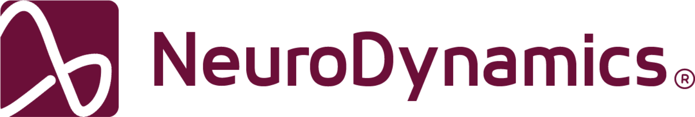

 | Outubro de 2026 |
| | | | | | | | Pesquisa e desenvolvimento |
| | | | Sinais mais limpos, decisões melhores |
| | | | NeuroAmp-32 chega à revisão C | | | | A placa de aquisição de 32 canais passou nos testes de ruído com 1,0 µVpp na entrada e autonomia de 30 horas. A antena foi reposicionada e o próximo lote segue para validação clínica em novembro. | | | |
| | |
| | | | Agenda | | | | 12 nov | | Simpósio de Neuroengenharia | | Auditório do CTIT, 9h |
|
| | | | 19 nov | | Seminário de bancada | | Sala 204, 14h |
|
| | | | 3 dez | | Banca de mestrado, A. Ribeiro | | Online, 10h |
|
|
| | | | | | | | | | | | | | NeuroDynamics, Laboratório de Neuroengenharia
Av. Antônio Carlos, 6627, Pampulha, Belo Horizonte, MG, 31270-901
contato@neurodynamics.dev | | | | | | | | Você recebe este e-mail por fazer parte da rede NeuroDynamics. Gerenciar preferências ou descadastrar. Conteúdo confidencial, destinado apenas ao destinatário. |
|
|